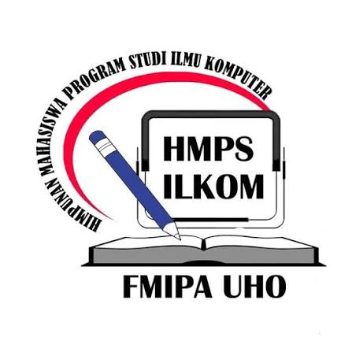
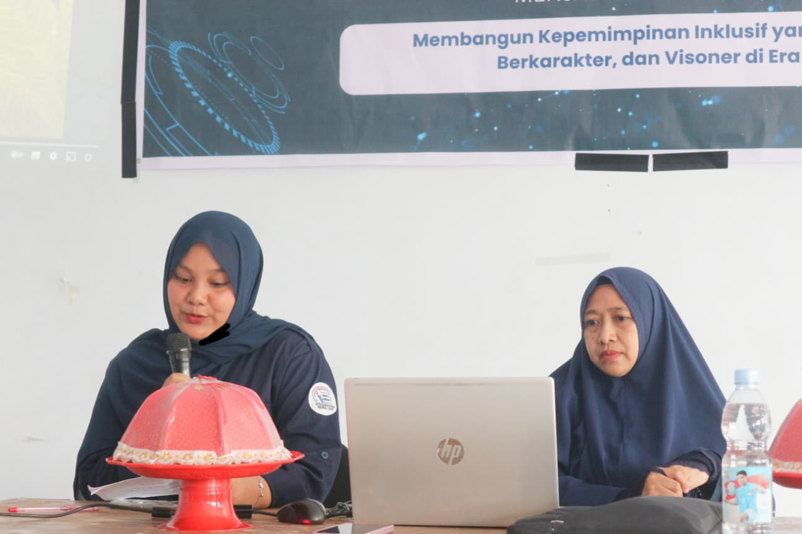
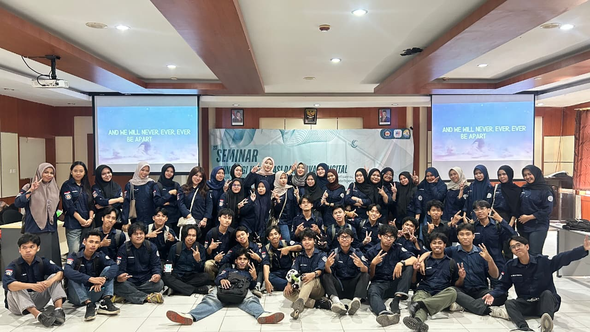
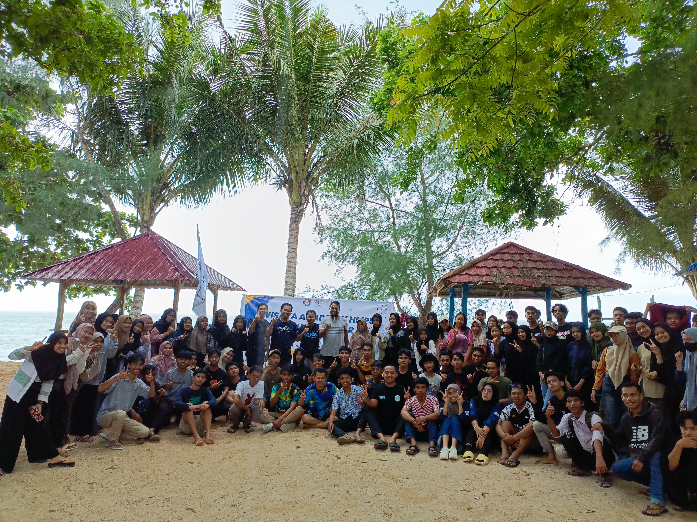

⟨ memberOf → Organization ⟩
Mengikuti berbagai kegiatan yang diselenggarakan oleh Himpunan Mahasiswa Program Studi Ilmu Komputer sebagai bentuk pengalaman organisasi dan pengembangan diri. Melalui kegiatan ini saya memperoleh pengalaman bekerja dalam lingkungan organisasi, membangun relasi dengan mahasiswa lain, serta mengembangkan kemampuan komunikasi dan kerja sama dalam berbagai aktivitas yang berkaitan dengan teknologi dan ilmu komputer.
Mampu bekerja sama dalam tim melalui berbagai kegiatan mahasiswa dengan membangun koordinasi dan tanggung jawab bersama.
Mengembangkan kemampuan mengambil peran, beradaptasi, serta bertanggung jawab dalam menyelesaikan kegiatan organisasi.
Berada dalam lingkungan mahasiswa yang aktif mempelajari dan mengembangkan teknologi khususnya bidang ilmu komputer.



